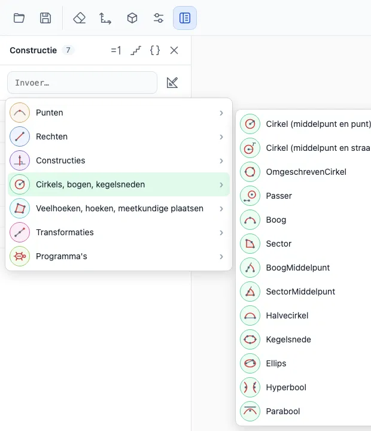

Het gereedschapsmenu

Gebruik
- , rechts van de invoerregel, opent het menu: de families van de ring, dezelfde kleuren, dezelfde volgorde, en dan hun gereedschappen bij het aanwijzen of aantikken.
- Het menu bevat alle gereedschappen van de ring en meer (kenmerk ring hieronder). De families Vlakken en Ruimtefiguren en de gereedschappen met 3D verschijnen alleen in de 3D-weergave.
- De familie Programma's, die alleen het menu heeft, maakt schildpadden en knoppen (zie Blokken en schildpad).
- Het eerst geselecteerde object neemt elke plaats in die zijn type toelaat: bij een loodlijn mag de rechte vóór het punt komen.
- De argumenten kunnen ook in het paneel „Constructie” worden geselecteerd: de regels van de objecten die het gereedschap toelaat zijn groen gemarkeerd, de andere vervaagd. Ook een verborgen object kan daar worden geselecteerd. Een punt kan daar alleen worden geselecteerd als het al bestaat, en het snijpunt van twee krommen is het eerste. Zolang het gereedschap actief is, wijzigt een klik op een regel die regel niet. Een al geselecteerde regel wordt blauw, met zijn plaats in de opdracht (1, 2…).
- Het gereedschap blijft actief: na elk object wacht het opnieuw op zijn eerste argument. De menuknop neemt zijn pictogram over en de balk toont een strook met Klaar.
- Stoppen: Klaar, Esc, het ✕ van de aanwijzing, de menuknop (die het menu opnieuw opent), de gum, stap voor stap of een klik in de invoerregel. Ongedaan maken, opnieuw, de eigenschappen en de 3D-weergave behouden het gereedschap.
Met een selectie
Eerst geselecteerde objecten worden de argumenten van het gekozen gereedschap: zie Construeren via meervoudige selectie.
Alle gereedschappen
Voor elk gereedschap: wat je selecteert, en dan de geschreven regel.
Punten
-
PuntringHet punt dat je aantikt: vrij op een lege plek, op een object of op het snijpunt van twee objecten.
Punt(c, t) -
SnijpuntringEen kruising met één tik, of de twee objecten na elkaar.
Snijpunt(a, b) -
MiddenringTwee punten, of een lijnstuk.
Midden(A, B) -
MiddelpuntringEen cirkel: zijn middelpunt.
Middelpunt(c) -
AnderSnijpuntTwee objecten, en dan een punt dat al op een van hun snijpunten ligt: het snijpunt dat er het verst van ligt.
AnderSnijpunt(a, b, P) -
MiddelpuntIngeschrevenCirkelDrie punten, hoekpunten van een driehoek: het middelpunt van de ingeschreven cirkel.
MiddelpuntIngeschrevenCirkel(A, B, C) -
ZwaartepuntDrie punten: het zwaartepunt van de driehoek.
Zwaartepunt(A, B, C) -
MiddelpuntOmgeschrevenCirkelDrie punten: het middelpunt van de omgeschreven cirkel.
MiddelpuntOmgeschrevenCirkel(A, B, C) -
HoogtepuntDrie punten: het hoogtepunt van de driehoek.
Hoogtepunt(A, B, C)
Rechten
-
LijnstukringTwee punten, de eindpunten.
Lijnstuk(A, B) -
RechteringTwee punten van de rechte.
Rechte(A, B) -
HalfrechteringTwee punten: het beginpunt, en dan een punt van de halfrechte.
Halfrechte(A, B) -
VectorringTwee punten: het beginpunt, en dan het eindpunt.
Vector(A, B)
Constructies
-
LoodlijnringEen punt en een rechte, in willekeurige volgorde. In 3D een rechte of een vlak.
Loodlijn(P, d) -
EvenwijdigeringEen punt en een rechte, in willekeurige volgorde.
Evenwijdige(P, d) -
MiddelloodlijnringTwee punten, of een lijnstuk.
Middelloodlijn(A, B) -
BissectriceringDrie punten: een punt van het eerste been, het hoekpunt, een punt van het tweede been.
Bissectrice(A, O, B) -
RaaklijnEen punt, en dan een cirkel, een kegelsnede of de grafiek van een functie. Het gereedschap geeft raaklijn nr. 1; verander dat getal in 2 in de regel voor de andere.
Raaklijn(P, c, 1)
Cirkels, bogen, kegelsneden
-
Cirkel (middelpunt en punt)ringHet middelpunt, en dan een punt van de cirkel.
Cirkel(O, A) -
Cirkel (middelpunt en straal)ringAlleen het middelpunt: de straal, ongeveer 150 pixels, verander je daarna door de cirkel te slepen of in de regel.
Cirkel(O, 3.8) -
OmgeschrevenCirkelringDrie punten van de cirkel.
OmgeschrevenCirkel(A, B, C) -
Bolring3DHet middelpunt, en dan een punt van de bol.
Bol(O, A) -
PasserTwee punten die de straal geven, en dan het middelpunt.
Passer(A, B, O) -
Cirkel (middelpunt, richting en straal)3DHet middelpunt, en dan een rechte (de as) of een vlak (evenwijdig aan de cirkel), de vloer inbegrepen. Straal ongeveer 150 pixels.
Cirkel(O, 3.8, d) -
Cirkel (as en punt)3DEen rechte, de as, en dan een punt van de cirkel.
Cirkel(d, P) -
BoogDrie punten: het begin, een punt waar de boog door gaat, het einde.
Boog(A, B, C) -
SectorDrie punten, zoals bij de boog: de sector die hij begrenst.
Sector(A, B, C) -
BoogMiddelpuntHet middelpunt, het begin, en dan een punt van de halfrechte waar de boog stopt (tegen de wijzers van de klok in).
BoogMiddelpunt(M, A, B) -
SectorMiddelpuntZoals
BoogMiddelpunt: de sector.SectorMiddelpunt(M, A, B) -
HalvecirkelTwee punten, eindpunten van de middellijn: de halve cirkel links van [AB].
Halvecirkel(A, B) -
KegelsnedeVijf punten van de kegelsnede. Vanaf het tweede toont het voorbeeld de kegelsnede die het dichtst bij een cirkel ligt.
Kegelsnede(A, B, C, D, E) -
EllipsDe twee brandpunten, en dan een punt van de ellips.
Ellips(F, G, P) -
HyperboolDe twee brandpunten, en dan een punt van de hyperbool.
Hyperbool(F, G, P) -
ParaboolHet brandpunt, en dan de richtlijn.
Parabool(F, d)
Veelhoeken, hoeken, meetkundige plaatsen
-
VeelhoekringDe hoekpunten een voor een, en dan opnieuw het eerste om te sluiten.
Veelhoek(A, B, C) -
HoekringDrie punten: een punt van het eerste been, het hoekpunt, een punt van het tweede been.
Hoek(A, O, B) -
MeetkundigePlaatsringEen punt dat afhangt van een punt op object: zijn meetkundige plaats wanneer dat punt zijn object doorloopt.
MeetkundigePlaats(M, P) -
RegelmatigeVeelhoekTwee opeenvolgende hoekpunten: het gereedschap geeft een vierkant; verander het aantal zijden in de regel.
RegelmatigeVeelhoek(A, B, 4)
Transformaties
-
PuntspiegelingringHet te transformeren punt, en dan het centrum.
Spiegeling(P, O) -
LijnspiegelingringHet te transformeren punt en de as, in willekeurige volgorde.
Spiegeling(P, d) -
DraaiingHet punt, en dan het centrum: een kwartslag, die je in de regel verandert.
Draaiing(P, O, 90) -
VerschuivingHet punt, en dan de vector.
Verschuiving(P, u) -
VermenigvuldigingHet punt, en dan het centrum: een factor 2, die je in de regel verandert.
Vermenigvuldiging(P, O, 2) -
InversieHet punt, en dan de inversiecirkel.
Inversie(P, c)
Vlakken
-
Vlak3DDrie punten, of een punt en een rechte.
Vlak(A, B, C) -
EvenwijdigVlak3DEen punt en een vlak (de vloer inbegrepen): het evenwijdige vlak door het punt.
EvenwijdigVlak(A, p) -
LoodrechtVlak3DEen punt en een rechte: het vlak loodrecht op de rechte.
LoodrechtVlak(A, d)
Ruimtefiguren
-
Cilinder3DTwee punten, uiteinden van de as. Straal ongeveer 150 pixels.
Cilinder(A, B, 3.8) -
Kegel3DHet middelpunt van het grondvlak, en dan de top. Straal ongeveer 150 pixels.
Kegel(A, B, 3.8) -
Kubus3DTwee punten van eenzelfde vlak of op dezelfde hoogte, anders drie punten (zie 3D).
Kubus(A, B, C) -
Prisma3DEen veelhoek, het grondvlak, en dan een punt, hoekpunt van het tegenoverliggende zijvlak.
Prisma(p, P) -
Piramide3DEen veelhoek, het grondvlak, en dan de top.
Piramide(p, S) -
Doorsnede3DEen ruimtefiguur (bol, cilinder, kegel, veelvlak) en een vlak, in willekeurige volgorde.
Doorsnede(s, p) -
Uitslag3DEen kubus, een prisma of een piramide: de platte uitslag.
Uitslag(c, 1)
Programma's
-
SchildpadEen punt, of een lege plek die er een maakt: de schildpad die van dat punt vertrekt, geopend in blokken.
TURTLE_INIT("A", A) -
KnopDe plek van zijn pijl: de knop, met zijn programma geopend in blokken.
Knop("Uitvoeren") -
Wanneer het object wordt gesleeptEen punt dat versleept kan worden: het programma dat loopt wanneer het wordt gesleept, geopend in blokken.
-
Wanneer het object wordt ingedruktEen punt dat versleept kan worden: het programma dat loopt wanneer het wordt ingedrukt, geopend in blokken.
-
Wanneer het object wordt losgelatenEen punt dat versleept kan worden: het programma dat loopt wanneer het wordt losgelaten, geopend in blokken.
-
Wanneer de waarde verandertEen uitdrukking: het programma dat loopt wanneer haar waarde verandert, geopend in blokken.
De transformaties maken het beeld van een punt.
Alleen via het toetsenbord: VastPunt,
Hoekpunt, Schuifknop,
Lijst, de snijpunten in de ruimte,
Ellips(F, G, a) en
Hyperbool(F, G, a) (zie
De opdrachten).